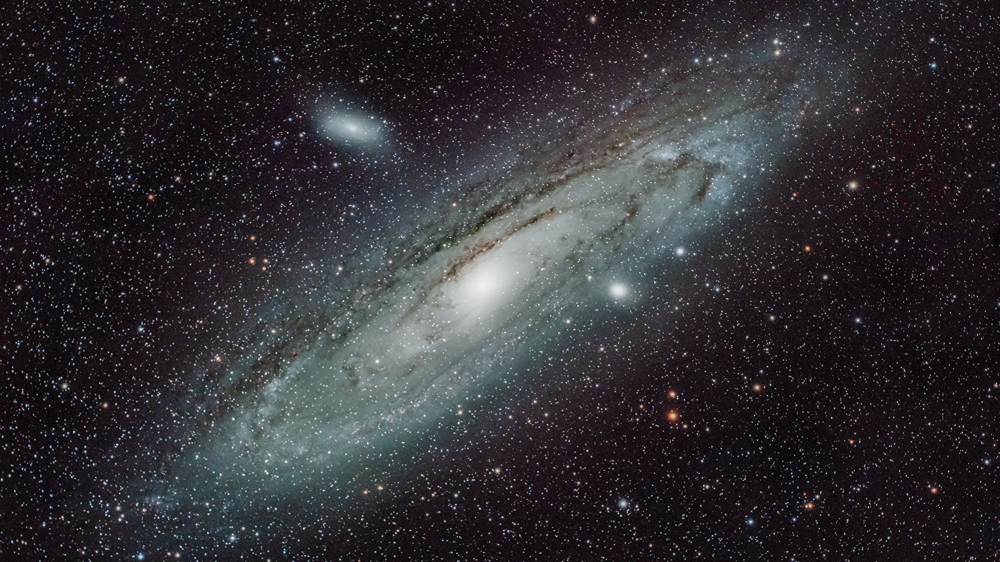
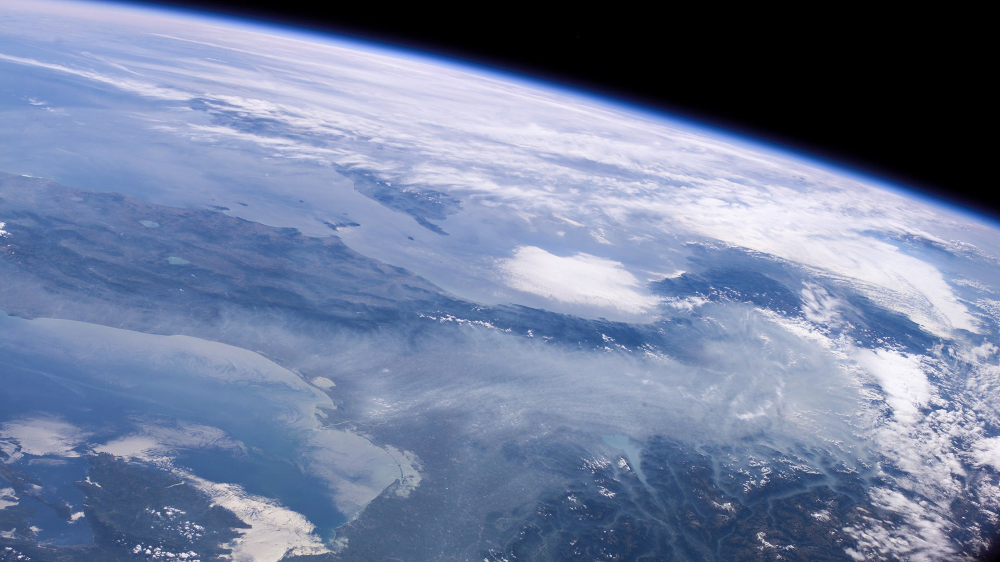

Aquí tienes una pequeña selección de los viajes que gestiona nuestra empresa incluida, la Estación Espacial Gubernamental.

Somos el equipo de Ad Astra Per Aspera o simplemente AdAstra, nuestro ansia de exploracion espacial nace, de la necesidad de descubrir lo desconocido, donde nunca llegó el hombre, donde nadie nunca hubiese imaginado ir, allí queremos llegar nosotros, además nosotros pretendemos llevarlo a un nivel más, ofrecemos cursos extensos e intensivos para que cualquiera con el capital suficiente se puede preparar y viajar a los confines del universo, podrías ser tu el primer poblador de un planeta asemejado a la Tierra como ED-234-AUO, solo tú te podrás limitar.
La India ha hecho historia con su misión al Polo Sur de la Luna. Este ambicioso proyecto representa un gran salto en la exploración espacial y coloca a la India en una posición destacada en la carrera espacial internacional. Su objetivo no es solo cartografiar la superficie lunar, sino también explorar la posibilidad de hallar agua y otros recursos valiosos, además este año descubrió un sistema solar excepcional, con seis planetas que orbitan su estrella en una rara sincronía. Este fenómeno, que desafía nuestras comprensiones actuales sobre la formación de sistemas planetarios, abre nuevas puertas para entender la complejidad del universo y cómo se forman los sistemas planetarios, la brillante estrella HD 110067 alberga seis subneptunos en tránsito que siguen una cadena de órbitas resonantes. Los seis planetas descubiertos tienen radios que varían entre 1.94 y 2.85 veces el radio de la Tierra.
El Telescopio Espacial James Webb ha observado misteriosas formaciones en el centro de nuestra galaxia. Estas estructuras, cuya naturaleza aún se desconoce, podrían aportar información crucial sobre el núcleo galáctico y los procesos que ocurren en las regiones más profundas del espacio. La NASA, así, ha compartido una imagen que detalla con una claridad asombrosa la región de Sagitario C, un crisol estelar situado a unos 300 años luz del imponente agujero negro que rige el corazón de la Vía Láctea. Esta imagen es un tapiz de aproximadamente 500.000 estrellas, entrelazadas con un cúmulo de protoestrellas emergentes de densas nubes de polvo y gas cósmico.
Mercurio retrógrado, un fenómeno astronómico que a menudo se encuentra en la cultura popular y la astrología, ha captado la atención de la comunidad científica. Este año, los investigadores han profundizado en el verdadero impacto de este evento y cómo influye en nuestro sistema solar. Debido a que Mercurio orbita el Sol en aproximadamente 88 días, más rápido que la Tierra, experimenta este movimiento retrógrado más a menudo que otros planetas, aproximadamente 3-4 veces al año. Después de estar en retroceso del 23 de agosto al 14 de septiembre, el planeta volverá a parecer que se mueve hacia atrás del 13 de diciembre al 1 de enero de 2024.
En 2025, se espera un evento que podría hacer desaparecer de nuestra vista los anillos de Saturno. Este fenómeno, que ha generado gran interés en la comunidad científica, nos ofrece una oportunidad única para estudiar la evolución y la dinámica de estos enigmáticos anillos. Este acto de desaparición cósmica, más que un truco de magia, es el resultado de una ilusión óptica. Ocurrirá cuando la Tierra se posicione en el punto exacto en el que los bordes de los delgados anillos de Saturno estén orientados directamente hacia nosotros, dando la impresión de que han desaparecido por completo.
Tras un viaje de más de un millón de kilómetros al espacio, el nuevo observatorio insignia de la NASA, el telescopio espacial James Webb, ha capturado su primera serie de imágenes a todo color del universo. En un evento especial, el Presidente de Estados Unidos, Joe Biden, ha desvelado una de ellas, en la que cientos (si no miles) de galaxias lejanas salpican un mar cósmico de tinta. "Es una nueva ventana a la historia de nuestro universo", dijo Biden durante el acto. "Y hoy vamos a echar un vistazo a la primera luz que brilla a través de esa ventana".